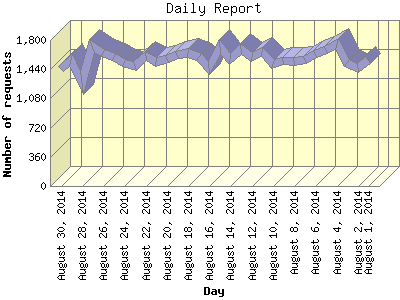

The Daily Report identifies the activity for each day within the reporting period. Remember that one page hit can result in several server requests as the images for each page are loaded.

| Day | Number of requests | Number of page requests | |
|---|---|---|---|
| 1. | August 1, 2014 | 1,558 | 1,465 |
| 2. | August 2, 2014 | 1,455 | 1,369 |
| 3. | August 3, 2014 | 1,522 | 1,450 |
| 4. | August 4, 2014 | 1,754 | 1,525 |
| 5. | August 5, 2014 | 1,677 | 1,481 |
| 6. | August 6, 2014 | 1,624 | 1,501 |
| 7. | August 7, 2014 | 1,550 | 1,437 |
| 8. | August 8, 2014 | 1,536 | 1,458 |
| 9. | August 9, 2014 | 1,537 | 1,489 |
| 10. | August 10, 2014 | 1,504 | 1,430 |
| 11. | August 11, 2014 | 1,654 | 1,476 |
| 12. | August 12, 2014 | 1,590 | 1,478 |
| 13. | August 13, 2014 | 1,691 | 1,505 |
| 14. | August 14, 2014 | 1,561 | 1,444 |
| 15. | August 15, 2014 | 1,718 | 1,497 |
| 16. | August 16, 2014 | 1,449 | 1,409 |
| 17. | August 17, 2014 | 1,596 | 1,490 |
| 18. | August 18, 2014 | 1,644 | 1,478 |
| 19. | August 19, 2014 | 1,612 | 1,477 |
| 20. | August 20, 2014 | 1,569 | 1,480 |
| 21. | August 21, 2014 | 1,525 | 1,466 |
| 22. | August 22, 2014 | 1,600 | 1,480 |
| 23. | August 23, 2014 | 1,478 | 1,409 |
| 24. | August 24, 2014 | 1,519 | 1,473 |
| 25. | August 25, 2014 | 1,596 | 1,517 |
| 26. | August 26, 2014 | 1,635 | 1,477 |
| 27. | August 27, 2014 | 1,723 | 1,506 |
| 28. | August 28, 2014 | 1,264 | 1,200 |
| 29. | August 29, 2014 | 1,550 | 1,466 |
| 30. | August 30, 2014 | 1,444 | 1,407 |
Most active day August 4, 2014 : 1,525 pages sent. 1,754 requests handled.
Daily average: 1,458 pages sent. 1,571 requests handled.
This report was generated on August 31, 2014 07:43.
Report time frame August 1, 2014 00:00 to August 30, 2014 23:59.
| Web statistics report produced by: analog 6.0 / Report Magic 2.21 |